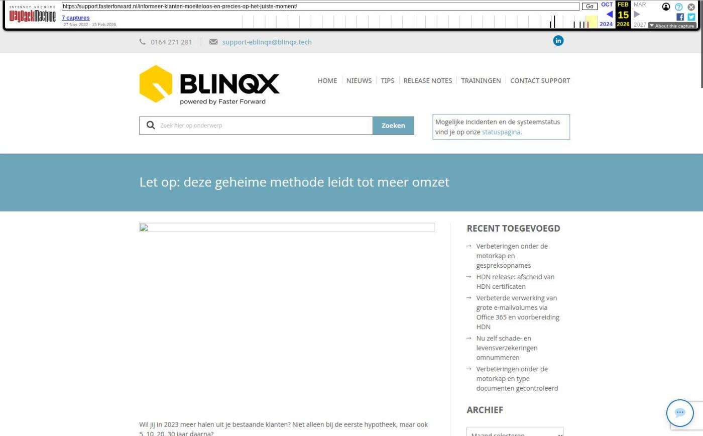

Let op: deze geheime methode leidt tot meer omzet

Tekstinhoud
Title: Let op: deze geheime methode leidt tot meer omzet | Support
URL: https://web.archive.org/web/20260215231337/https://support.fasterforward.nl/informeer-klanten-moeiteloos-en-precies-op-het-juiste-moment/
Source element: <article>
---
Wil jij in 2023 meer halen uit je bestaande klanten? Niet alleen bij de eerste hypotheek, maar ook 5, 10, 20, 30 jaar daarna?
Met Elements en PortefeuilleSignalen is klantbeheer een fluitje van een cent. Je informeert jouw klanten, precies op het juiste moment én zonder dat het veel tijd en moeite kost.
Let op: Advieskantoren die deze geheime methode gebruiken, blijven top-of-mind bij hun klanten, genereren meer omzet en zijn minder tijd kwijt aan klantbeheer.
Zo werkt het
De software doet het zware werk
Wil je deze feature gebruiken?
1. Je krijgt een taak in Elements
2. Je informeert de klant
3. Je krijgt een herinnering
4. Je legt het contact vast
Wil je dit ook?
Zo werkt het
De software doet het zware werk
PortefeuilleSignalen analyseert namelijk – volledig automatisch – jouw klantdossiers (alleen na jouw toestemming). Zodra er een kans of bedreiging is, ontvang je een melding en informeer je je klanten in een paar klikken. De e-mails met uitleg over de kans of bedreiging hebben we namelijk al voor je klaargezet.
Deze nieuwe feature is beschikbaar voor de volgende signalen:
Besparing ORV mogelijk
Oversluiten (met goedkopere maandlast)
Duurzaam oversluiten (met goedkopere maandlast)
Betaalbaarheid wonen bij naderen pensioenleeftijd
Rentevastperiode loopt af
Wil je deze feature gebruiken?
Een consultant van Faster Forward richt dit voor je in. Als je dit wilt, stuur dan een e-mail naar support@fasterforward.nl. Vermeld hierbij welke signalen je wilt gebruiken.
Wij kijken dan of je PortefeuilleSignalen al gebruikt en nemen contact op voor de vervolgstappen.
Zo simpel werkt het
In 4 stappen benader je je klanten én leg je het contact vast.
1. Je krijgt een taak in Elements
Zodra PortefeuilleSignalen een kans of bedreiging signaleert óf je start een campagne in PortefeuilleSignalen, dan wordt er voor de gewenste persoon of groep, bijvoorbeeld de binnendienst, een taak aangemaakt in Elements. Open de taak voor meer informatie.
2. Je informeert de klant
Start de workflow in het klantdossier. Het bericht staat al voor je klaar. Je kiest zelf hoe je deze wilt communiceren naar klant. Je kan een e-mail sturen of een bericht plaatsen in de uwkluis (mijn omgeving) van de klant.
Voorbeeld bericht in uwkluis
3. Je krijgt een herinnering
Om te controleren of de klant reageert, wordt er een beltaak aangemaakt. Zo wordt je eraan herinnerd dat je contact op moet nemen wanneer de klant niet reageert.
4. Je legt het contact vast
Heb je de kans of bedreiging besproken met de klant? Of heeft de klant niet gereageerd? Dan geef je dit aan in de workflow en wordt automatisch de bijbehorende e-mail klaargezet. Deze stuur je ter bevestiging naar de klant. Zo leg je de reactie van de klant vast in het klantdossier. Bovendien kun je hiermee altijd aantonen dat je hebt voldaan aan deze nazorg verplichting.
Wil je dit ook?
Een consultant van Faster Forward richt dit voor je in. Als je dit wilt, stuur dan een e-mail naar support@fasterforward.nl. Vermeld hierbij welke signalen je wilt gebruiken.
Als je PortefeuilleSignalen nog niet gebruikt, neem dan contact op met De Nationale Hypotheekbond.
Geplaatst op 7 november 2022 (Laatste update: 06 april 2023)